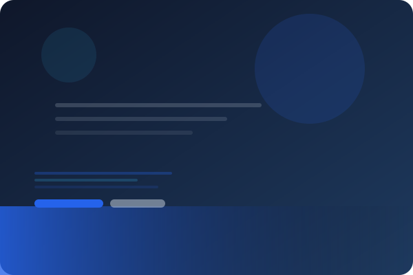

Terstruktur
Proses pengembangan dipecah menjadi tahapan yang jelas, dari analisis kebutuhan hingga pemeliharaan.
Rekayasa Perangkat Lunak
RPL Insight merangkum konsep, tahapan, dan tools penting dalam siklus hidup pengembangan perangkat lunak — disusun sederhana untuk pemula yang baru mulai belajar.

Tentang RPL
Rekayasa Perangkat Lunak (Software Engineering) adalah disiplin ilmu yang mempelajari cara merancang, membangun, menguji, dan memelihara perangkat lunak secara sistematis, terstruktur, dan terukur.
Proses pengembangan dipecah menjadi tahapan yang jelas, dari analisis kebutuhan hingga pemeliharaan.
Melibatkan banyak peran seperti analis, desainer, developer, dan tester yang bekerja sama.
Setiap tahapan punya standar kualitas dan dokumentasi agar progres bisa dipantau dengan jelas.
Perangkat lunak terus dievaluasi dan diperbarui mengikuti kebutuhan pengguna yang berkembang.
Alur Kerja
SDLC adalah tahapan berurutan yang menjadi panduan tim dalam mengembangkan perangkat lunak dari awal hingga siap digunakan.
Mengumpulkan dan mendefinisikan kebutuhan pengguna serta batasan sistem yang akan dibangun.
Menyusun arsitektur sistem, struktur data, dan tampilan antarmuka berdasarkan kebutuhan.
Menerjemahkan rancangan menjadi kode program menggunakan bahasa pemrograman yang sesuai.
Memastikan perangkat lunak berjalan sesuai spesifikasi dan bebas dari bug kritis.
Merilis perangkat lunak ke lingkungan produksi agar dapat digunakan oleh pengguna akhir.
Memantau, memperbaiki, dan memperbarui sistem secara berkala setelah dirilis.
Materi Belajar
Rangkuman topik inti dalam pembelajaran RPL, cocok untuk dijadikan checklist belajar.
Teknik menggali, menganalisis, dan mendokumentasikan kebutuhan sistem dari pengguna.
DasarMenggambarkan struktur dan perilaku sistem lewat use case, class, dan activity diagram.
DesainKonsep class, object, inheritance, dan polymorphism sebagai dasar coding modern.
CodingPerancangan skema data, normalisasi, dan query menggunakan SQL maupun NoSQL.
DataUnit test, integration test, hingga UAT untuk memastikan kualitas perangkat lunak.
QAMengelola perubahan kode secara kolaboratif menggunakan Git dan platform seperti GitHub.
ToolsPendekatan pengembangan iteratif yang adaptif terhadap perubahan kebutuhan proyek.
ProsesPrinsip desain antarmuka yang membuat perangkat lunak mudah dan nyaman digunakan.
DesainPerlengkapan
Beberapa alat bantu yang umum digunakan di setiap tahapan pengembangan perangkat lunak.
Tentang Pembuat
Website ini dibuat sebagai bagian dari proses belajar dasar pemrograman web.
Pertanyaan Umum
Pemrograman hanya bagian kecil dari RPL. RPL mencakup keseluruhan proses mulai dari analisis kebutuhan, perancangan, pengujian, hingga pemeliharaan sistem secara sistematis.
Tidak. Mulailah dari konsep dasar seperti SDLC dan requirement engineering, lalu perdalam topik lain secara bertahap sesuai kebutuhan proyek.
Saat ini Agile dan Scrum menjadi metodologi paling populer karena sifatnya yang iteratif dan mudah beradaptasi dengan perubahan kebutuhan.